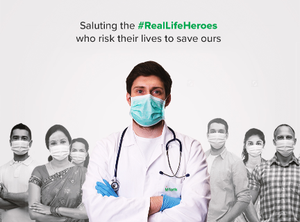
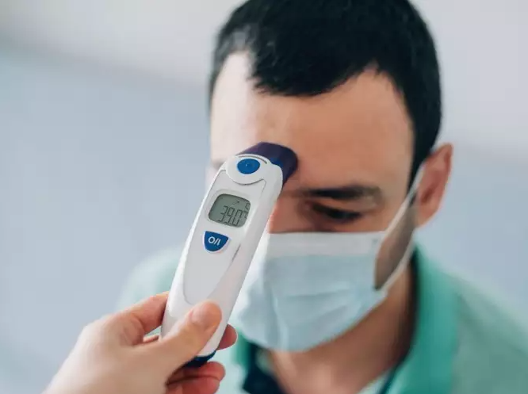
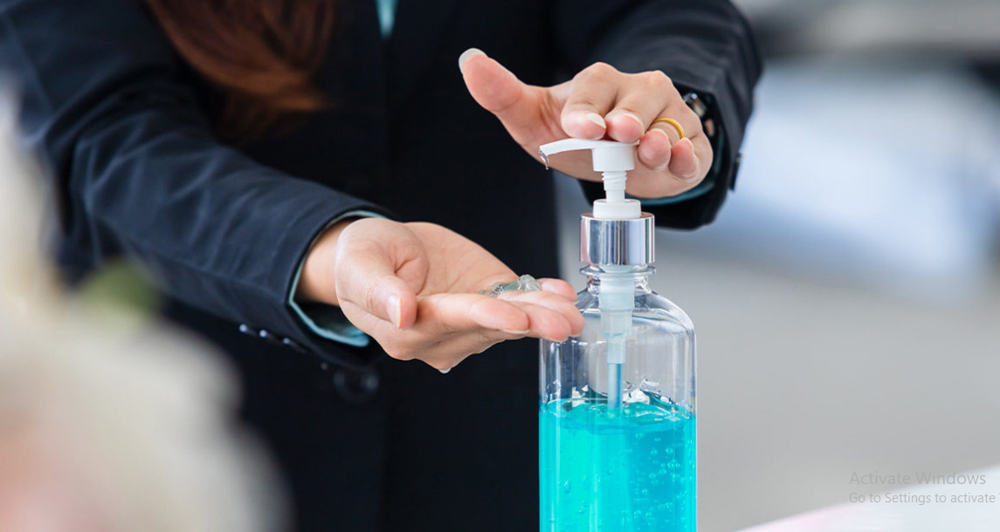
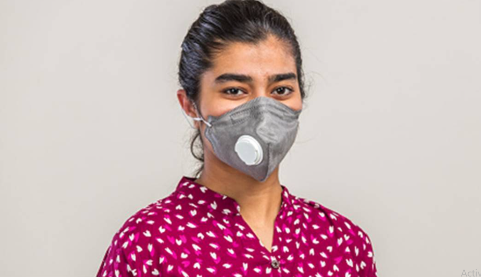
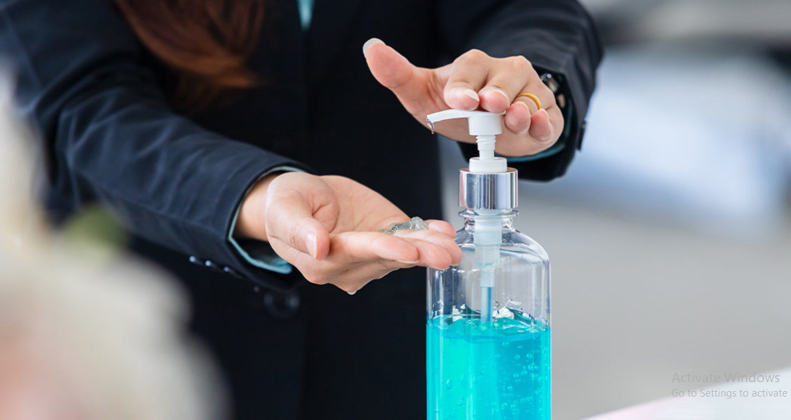
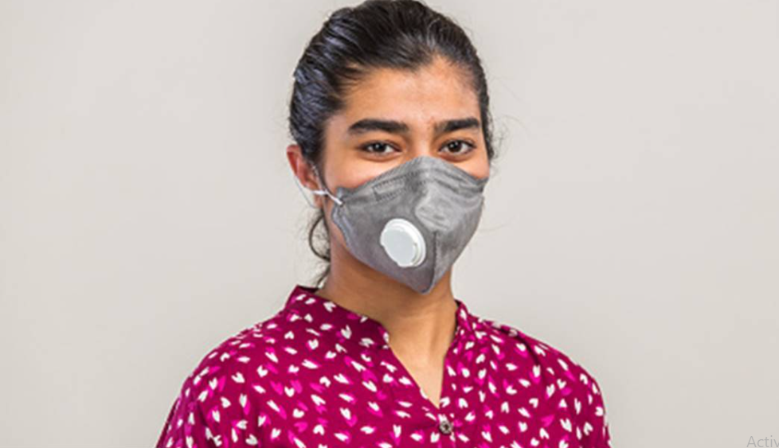
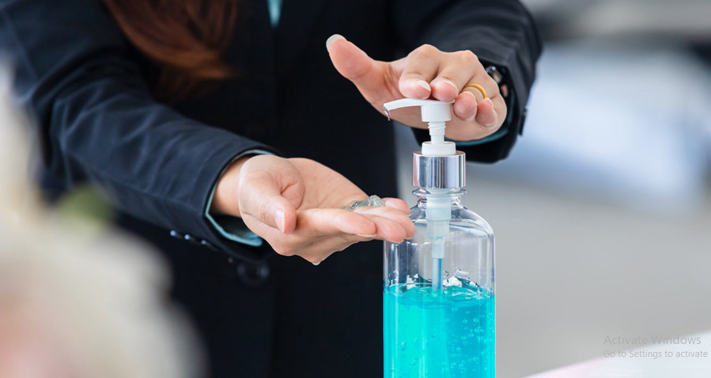
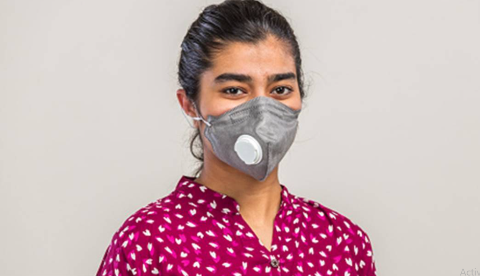

Accumulating Trust for more than 60 years. we heal all the people who are ill by
not discriminating by their religion,caste etc. We are proud to say that the Future of caring and
facilites is here...
24x7 open for your care.
Centers of Excellence
The hospital is governed by a Board of Management comprising medical
consultants of eminence, some with an international standing. The Board of Management operates under a
specialized team which is lead by the managing director of the E-Healthcare Hospital. Here, we
consider it our prime responsibility to provide high-quality clinical care to all our patients.
Putting the patient at the core of our operations, we have developed robust quality standards,
used expert diagnoses and treatment plans and enhanced infection, and safety protocols to render
them the most appropriate treatment.
Message from our Medical Team
Chairman's Message
With the divine blessings of Lord Vishnu, we dedicate & strengthen our services to the society by
transforming our humble efforts from education to healthcare. The objective of YouHeal Hospitals
would be to provide solace to the suffering humanity with a healing, soothing & humane touch.
Mr. Rajpal
Our services
Diet and Nutrition Therapy : We delve deep into the existing
medical condition of the
patient(both IN and OUT patient) and therapy recommends appropriate dietary intake for accelerating
recovery and controlling the metabolic parameters as required, depending upon the clinical condition of
the patient. This is done through elaborate counseling at primary stages, followed by suggestive dietary
procedures and scheduled follow ups.
The hospital has a centralized kitchen service system. The kitchen provides disease specific diet to all
categories of patients like suites, deluxe rooms, nursing home, semi nursing home, semi paying, general
wards, and day care & dialysis patients.
Standardization and assurance of food and dietary service is maintained and regulated through NABH, ISO
policies etc and updated from time to time.
Our Aim and Objectives :
The aim of this department is to provide state of the art services for continuous evolution increasing
requirements of the patients as per their clinical condition.
To provide the appropriate normal and therapeutic diet for in-patients as well as disseminating
knowledge & awareness to the community as an integral part of the total patient care.
1. Areas for Nutritional Care 2. Critical Care Medicine/ ICU/Trauma/Burn Care 3. Cardiology & Cardiac Surgery 4. Chest Medicine 5. Nephrology 6. Dental Surgery 7. Neurology/Neurosurgery 8. Gastroenterology 9. Orthopedics / Knee/Hip Replacement 10. Pediatrics/Pediatric Surgery 11. Plastic Surgery 12. Psychiatry 13. Dialysis
OUR MISSION
Our Mission is to bring healthcare of international Standards within the
reach of every individuals. we are committed to the achievements of excellence in education, reserch and
healthcare for the benefits of humanity.
1. To provide free doctor consultation with the patient via audio/video in this covid-19 pandemic situation
2. To ensure accessible and quality healthcare by compassionate medical professionals to all.
3. To be the centre of excellence for medical research and academics.
4. To cultivate an environment of trust, honesty, mutual respect, equality, and ethics.
5. Works under the Ministry of Health and Family Welfare, Government of India.
Appointment with the doctor
Association with Ministry of Health and Family Welfare
If a patient wants to check up for his/her health related to covid-19 then instead of going to the hospital
we are here with the advanced way of having an appointment with the certified doctor which will examine you
and treat you with the real time chat based system, this will not only help you save your time and money
but also this would avoid the rush which is their at the every hospital and due to which corona spreads
easily. Here the doctor will examine you and recommends the essential drugs to take which you can order
online, and with the doctor prescription they can also recommends you to take home isolation if you
have corona. This will help most of the people.
Who can take appointment with doctor ?
1. In all those situation when a patient want to consult to a doctor, they can chat with doctor.
2. Only patient above 18 years can consults and chat with doctor.
3. No spamming is allowed, if someone caught in this act would be heavily fined.
4. The patient who is suffering with severe problem like lack of oxygen level etc can
immediately refer to some nearby hospial as chatting with doctor would not be efficient for them at that
moment.
We Works under the Ministry of Health and Family Welfare, Government of India. We are here to bring
the revolutionary change in the medical field were people can come and get the free check up and
with the divine blessings of god, we dedicate & strengthen our services to the society by
transforming our humble efforts from education to healthcare. The objective of E-Healthcare Hospital
would be to provide solace to the suffering humanity with a healing, soothing & humane touch.
To Attend the appointment with doctor you must fill the form
Symptoms:
COVID-19 affects different people in different ways.
Most infected people will develop mild to moderate illness and recover without hospitalization.
# Most common symptoms: 1. fever 2. dry cough 3. tiredness
# Less common symptoms: 1. aches and pains 2. sore throat 3. diarrhoea 4. conjunctivitis 5. headache 6. loss of taste or smell 7. a rash on skin, or discolouration of fingers or toes
Preventions:
Protect yourself and others around you by knowing the facts and taking appropriate
precautions. Follow advice provided by your local health authority.
# To prevent the spread of COVID-19: 1. Clean your hands often. Use soap and water, or an alcohol-based hand rub. 2. Maintain a safe distance from anyone who is coughing or sneezing. 3. Wear a mask when physical distancing is not possible. 4. Don’t touch your eyes, nose or mouth. 5. Cover your nose and mouth with your bent elbow or a tissue when you cough or sneeze. 6. Stay home if you feel unwell. 7. If you have a fever, cough and difficulty breathing, seek medical attention.
Calling in advance allows your healthcare provider to quickly direct you to the right health
facility. This protects you, and prevents the spread of viruses and other infections.
Importance of Masks
Masks can help prevent the spread of the virus from the person wearing the mask to others.
Masks alone do not protect against COVID-19, and should be combined with physical distancing and
hand hygiene. Follow the advice provided by your local health authority.




About Us
E-Healthcare hospital bring the revolutionary change to this medical
industry by treating patient in the home itself at this covid-19 pandemic situation which
is to bring healthcare of international Standards within the reach of every community and within the
reach of every individuals. we are committed to the achievements of excellence in education, reserch and
healthcare for the benefits of humanity.To ensure accessible and affordable quality healthcare by
compassionate medical professionals to all. To be the centre of excellence for medical research and
academics. To cultivate an environment of trust, honesty, mutual respect, equality, and ethics.
To ensure accessible and affordable quality healthcare by compassionate medical professionals to all.
To be the centre of excellence for medical research and academics.
To cultivate an environment of trust, honesty, mutual respect, equality, and ethics.


 


